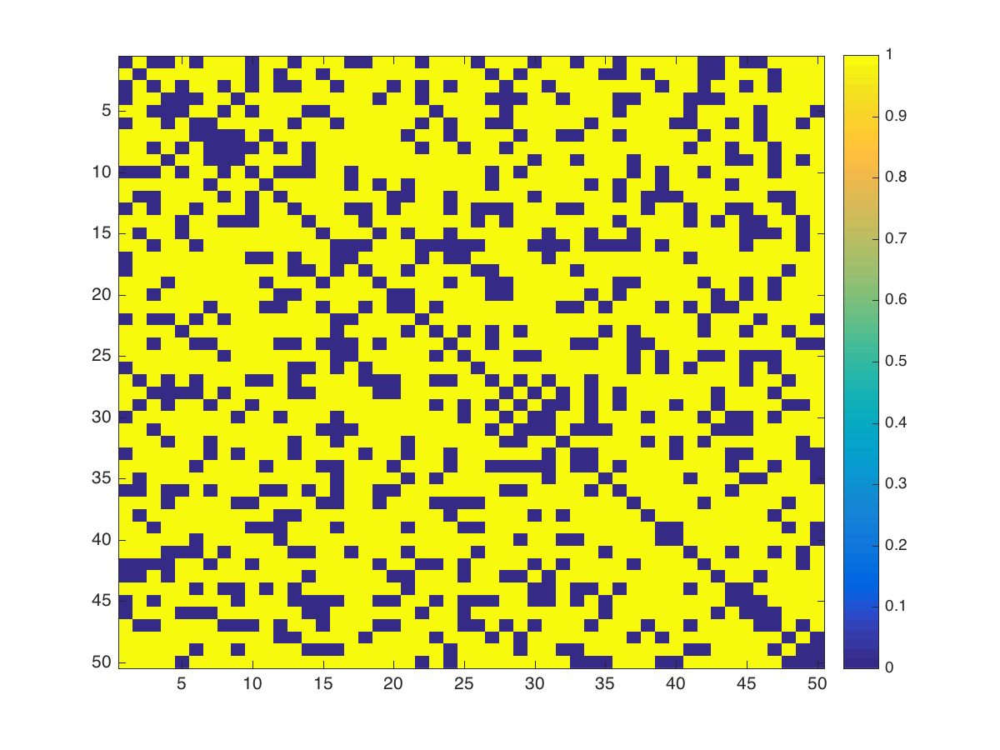
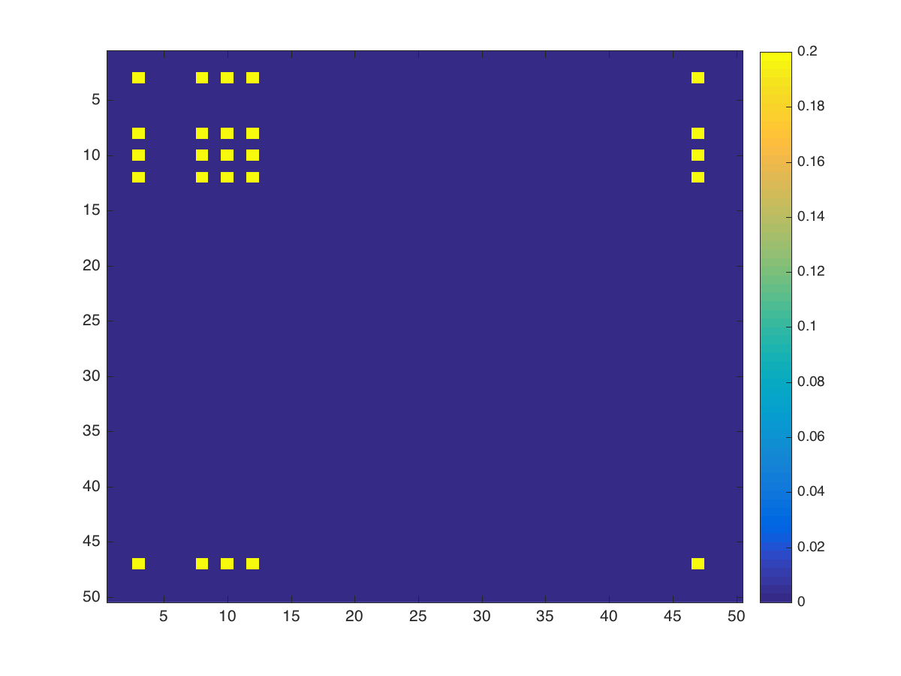

Problem set 5, ORF523
1 Problem 1
Notation \(E_{ij} = (\delta_{ik}\delta_{jl} + \delta_{il}\delta_{jk})_{k,l}\) the matrix with all 0 except in \((i, j)\) and \((j, i)\)
\begin{align*} -\nu(G) = & \underset{X}{\text{min}} & & Tr(X(-J)) \\ & \text{subject to} & & X \ge 0 \\&&& Tr(XI_n) = 1 &(:& \alpha) \\&&&Tr(E_{ij}X) = 0 \; \forall (i,j) \in E, i < j &(:& \lambda_{ij}) \end{align*}has for dual:
\begin{align*} & \underset{\alpha, \lambda_{ij} \in \mathbb R}{\text{max}} & & \alpha \\ & \text{subject to} & & \alpha I + \sum_{(i,j) \in E} \lambda_{ij} E_{ij} \le -J \end{align*}Or:
\begin{align*} & \underset{\alpha, \lambda_{ij} \in \mathbb R}{\text{max}} & & \alpha \\ & \text{subject to} & & \alpha I + \sum_{(i,j) \in E, i < j} \lambda_{ij} E_{ij} \le -J \end{align*}Both are strictly feasible:
- for the primal, take \(X = \frac{I_n}n\)
- For the dual, take \(\alpha = -2\), \(\lambda_{ij} = 0\)
Which proves that the dual and primal are equal. Taking \(\beta = -\alpha\), we can write that:
\begin{align*} \nu(G) = & \underset{\alpha, \lambda_{ij} \in \mathbb R}{\text{min}} & & \beta \\ & \text{subject to} & & -\beta I + \sum_{(i,j) \in E} \lambda_{ij} E_{ij} \le -J \end{align*}Note that the \((1, 1)\) entry of \(-\beta I + \sum_{(i,j) \in E} \lambda_{ij} E_{ij} + J\): \(1-\beta\) shoud be negative, so we can ammend to the constraints that \(\beta \ge 1\)
\begin{align*} -\beta I + \sum_{(i,j) \in E} \lambda_{ij} E_{ij} \le -J &\iff \beta(I - \sum_{(i,j) \in E} \frac{\lambda_{ij}}{\beta} E_{ij}) \ge J \\&\iff I - \sum_{(i,j) \in E} \frac{\lambda_{ij}}{\beta} E_{ij}) \ge \frac1\beta 11^T \\&\iff \begin{pmatrix}I - \sum_{(i,j) \in E} \frac{\lambda_{ij}}{\beta} E_{ij} & \begin{matrix}1\\\vdots\\1\end{matrix}\\ \begin{matrix}1&\ldots&1\end{matrix}&\beta\end{pmatrix} \ge 0 &\text{(By Schur Lemma bc $\beta > 0$)} \end{align*}Let's note this big matrix \(Z\). It is clear that a matrix \(Z \in S^{(n+1) \otimes (n+1)}\) is of this form iff it verifies the constraints of the following optimization problem:
\begin{align*} & \underset{\alpha, \lambda_{ij} \in \mathbb R}{\text{min}} & & Z_{n+1, n+1} \\ & \text{subject to} & & Z \ge 0 \\&&& Z_{i,n+1} = Z_{ii} = 0 \\&&& Z_{i,j} = 0 \forall \{i, j\} \in \bar E \end{align*}Which is then equal to \(\vartheta(G)\)
Let \(C = \chi(\bar G)\) By definition, there exist a partition of \(V\): \(\{V_1, \ldots, V_C\}\) such that \(V_i\) is a clique for all \(i \le C\)
- Define \(1_{V_i} \in \mathbb R^n\) to be the indicator function of the set \(V_i\), and note that \(1 = \sum_{i \le C} V_i\)
- Define \(z_i = \begin{pmatrix}1_{V_i}\\1\end{pmatrix} \in \mathbb R^{n+1}\). Note that: \[z_iz_i^T = \begin{pmatrix}1_{V_i}1_{V_i}^T&1_{V_i}\\1^T_{V_i}&1\end{pmatrix}\]
- Define \[Z = \sum_{i} z_iz_i^T = \begin{pmatrix}\sum 1_{V_i}1_{V_i}^T&1\\1^T&C\end{pmatrix}\]. \(Z\) is positive semidefinite because it is a sum of psd terms \(z_iz_i^T\)
- \((1_{V_i}1_{V_i}^T)_{kl} = (e_k^T1_{V_i})(e_l^T1_{V_i}) = 1_{V_i}(k) 1_{V_i}(l)\). If \((k, l) \in \bar E\), then the \(k^{th}\) node and the \(j^{th}\) node cannot be in the same \(V_i\), and therfore \((1_{V_i}1_{V_i}^T)_{kl} = 0\)
- If \(k = l\), all the terms in \(\sum_i (1_{V_i}1_{V_i}^T)_{kl}\) are zero except for the \(i\) for which the \(k^{th}\) node is in \(V_i\), in which case it is equal to one.
As a conclusion, \(Z\) verifies all constraints of the dual, and \(Z_{n+1, n+1} = C = \chi(\bar G)\), so \[\chi(\bar G) \ge \vartheta(G)\]
2
Consider \(G = C_5\).
Using CVX to calculate \(\vartheta(G)\)
n = 5 J = ones(n, n); cvx_begin sdp variable X(n, n) symmetric; maximize(trace(X*J)) X >= 0 X(5, 1) == 0 for i=1:4 X(i, i+1) == 0 end trace(X) == 1 cvx_end ans=cvx_optval
2.2361
\(2 < \vartheta(G) < 3\)
- \(\vartheta(G) \not \in \mathbb N\)
\(\alpha(G), \chi(\bar G) \in \mathbb N\)
No inequality can thus be tight.
2 Q2
1 --------–—Duality----------–—
Let \(x \in [0, 1]^n\) such that \(C_1, \ldots C_k\)
Consider \[Y = \begin{pmatrix} x_1 & \hfill & \hfill & \hfill & x_1 \\ \hfill & x_2 & \hfill & 0 & x_2 \\ \hfill & \hfill & \ddots &\hfill & \vdots \\ \hfill & 0 & \hfill & x_n & x_n \\ x_1 & x_2 & \ldots & x_n & 1 \\ \end{pmatrix}\]
2

Figure 1: G Adjacency matrix
2.1 \(\vartheta(G)\)
n = 50 J = ones(n, n); cvx_begin sdp variable X(n, n) symmetric; maximize(trace(X*J)) X >= 0 for i=1:n for j=1:i if G(i, j) == 1 X(i, j) == 0 end end end trace(X) == 1 cvx_end ans=cvx_optval
5

Figure 2: X optimal solution
Note that the resulting \(X\) is of rank 1, so it can be decomposed into \(X = xx^T\). We check that \(V_x = \{i , x_i \ne 0\}\) represents indeed a stable set.
[v,e] = eigs(full(X),1); stableset = find(abs(v) > 0.01) ans=stableset'
| 3 | 8 | 10 | 12 | 47 |
G(stableset, stableset)
| 0 | 0 | 0 | 0 | 0 |
| 0 | 0 | 0 | 0 | 0 |
| 0 | 0 | 0 | 0 | 0 |
| 0 | 0 | 0 | 0 | 0 |
| 0 | 0 | 0 | 0 | 0 |
Let's assume that there exist another stable set of size 5 \(V_y\).
This would mean that there exist \(v \in V_x\) such that imposing \(X_{jj} = 0\) would not change \(\alpha\). Let's check:
n = 50 J = ones(n, n); opt = [stableset, zeros(5, 1)] for vi=1:5 v = stableset(vi) cvx_begin sdp variable Y(n, n) symmetric; variable optvalue; maximize(trace(Y*J)) Y >= 0 for i=1:n for j=1:i if G(i, j) == 1 Y(i, j) == 0 end end end Y(v,v) == 0 trace(Y) == 1 optvalue == trace(Y*J) cvx_end opt(vi, 2) = optvalue end ans=opt
| Node removed | Lovasz of the subgraph |
|---|---|
| 3 | 4.4463 |
| 8 | 4.5191 |
| 10 | 4.512 |
| 12 | 4.5586 |
| 47 | 4.4771 |
Since Lovasz number \(\vartheta\) is an upper bound on \(\alpha\), This proves that any stable set not containing one of the nodes in \(V_x\) is of size less than \(5\).
We have just proved uniqueness of the stable set.
2.2 \(\mu^{LP}\)
k = 2
cvx_begin variable x(n) maximize(sum(x)) for i=2:n for j=1:(i-1) if G(i, j) == 1 x(i) + x(j) <= 1 end end end 0 <= x <= 1 cvx_end ans=cvx_optval
25
k = 3
cvx_begin variable x(n) maximize(sum(x)) for i=2:n for j=1:(i-1) if G(i, j) == 1 x(i) + x(j) <= 1 end for r=1:(j-1) if G(i, j) + G(j, r) + G(r, i) == 3 x(i) + x(j) + x(r) <= 1 end end end end 0 <= x <= 1 cvx_end ans=cvx_optval
16.667
k = 4
M = 50 cvx_begin variable x(n) maximize(sum(x)) for i=2:M for j=1:(i-1) if G(i, j) == 0 continue end x(i) + x(j) <= 1 for r=1:(j-1) if G(j, r) == 0 || G(r, i) == 0 continue end x(i) + x(j) + x(r) <= 1 for p =1:(r-1) if G(i, p) == 0 || G(j, p) == 0 || G(r, p) == 0 continue end x(i) + x(j) + x(r) + x(p) <= 1 end end end end 0 <= x <= 1 cvx_end ans=cvx_optval
12.5
3 Problem 3
1. Let \((a, b), (u, v)\) be two nodes in \(G_A \otimes G_B\) The two nodes are connected if and only if:
- \(A_{au} = 1, A_{bv} = 1\)
- \(a = u, A_{bv} = 1\)
- \(A_{au} = 1, b = v\)
This can be summerised as \((A_{au} + \delta_{au})(A_{bv} + \delta_{bv}) - \delta_{au}\delta_{bv} = 1\)
So the adjacency matrix of \(G_A \otimes G_B\) is \((A+I_{n}) \otimes (B+I_m) - I_{nm}\).
Where \(\otimes\) denote the Kronecker product: \((A\otimes B)_{p(r-1)+v, q(s-1)+w} = A_{rs} B_{vw}\)
2.
4 Problem 4
1. (1) is equivalent to \[\left\{\begin{array}{cc} x^TAy &= \max_{\tilde x \in \Delta_m} \tilde x^TAy\\ x^TBy &= \max_{\tilde y \in \Delta_n} x^TB\tilde y \end{array}\right.\]
Consider the first problem: \[\max_{\tilde x \in \Delta_m} \tilde x^TAy\]
This is an LP whose feasible region \(\Delta_m = conv(e_i, i=1\ldots m)\) is compact, so the maximum is attained in one of the extreme points \(e_{i_0}\). Therefore
\[x^TAy = \max_{\tilde x \in \Delta_m} \tilde x^TAy \iff x^TAy = e_{i_0}^TAy = \max_{i} e_i^TAy \iff x^TAy \ge e_i^TAy \forall i\] Same argument applies for \(y\) so that: \[x^TBy = \max_{\tilde y \in \Delta_n} x^TB \tilde y \iff x^TAy \ge x^TBe_i \forall i\]
So: \[(1) \iff \left\{\begin{array}{cc} x^TAy &\ge e_i^TAy \; \forall i = 1\ldots m\\ x^TBy &\ge x^TAe_i \; \forall i = 1\ldots n \end{array}\right.\]
2.
\(x \in \Delta_m, y \in \Delta_n\)
Note \(z = \begin{pmatrix}x \\ y\end{pmatrix}, u = \begin{pmatrix}1 \\ 0\end{pmatrix}, v = \begin{pmatrix}0 \\ 1\end{pmatrix}\), \(M = zz^T = \begin{pmatrix}xx^T&xy^T\\yx^T&yy^T\end{pmatrix}\)
Note that
- \(M \succeq 0\)
- \(rank(M) = 1\)
- \(u^TMu = 1^Txx^T1 = (1^Tx)^2 = 1\), similarly \(v^TMv = 1\)
- \(M_{(i+m), j} = x_iy_j \ge 0\)
Now let \(M \in S^{n+m}\), verifying all the previous conditions. Then by cholesky, there existe a vector \(z \in \mathbb R^{n+m}\), such that: \(M = zz^T\)
- Let's decompose \(z := \begin{pmatrix}x \\ y\end{pmatrix}\)
- \(1 = u^TMu \implies \sum_i x_i = \pm 1\), similarly, \(\sum y_j = \pm 1\)
- \(M_{(i+m), j} = x_iy_j \ge 0 \implies x_i, y_j\) all share the same sign.
- We can always change \(x\) and/or \(y\) to \(-x, -y\) to make \(x, y \ge 0\) and therefore \(\sum_i x_i = \sum_j y_j = 1\), e.g \(x \in \Delta_m, y \in \Delta_n\)
- \(Mu = \begin{pmatrix}xx^T 1\\yx^T1\end{pmatrix} = \begin{pmatrix}(x^T 1) x\\(x^T1)y\end{pmatrix} = \begin{pmatrix}x\\y\end{pmatrix}\)
- \(x = \underbrace{\begin{pmatrix}I_n&0\\0&0\end{pmatrix}}_{J_1}Mu\)
- \(y = \underbrace{\begin{pmatrix}0&0\\0&I_m\end{pmatrix}}_{J_2}Mu\)
- \(yx^T = M_{n:n+m, 1:n}\)
The constraint of \((2)\) can be formulated as follow:
- \[x^TAy = tr(yx^TA) = tr(M_{n:n+m, 1:n} A)\]
- \(e_i^TAy = e_i^TAJ_2Mu = tr(ue_i^T AJ_2 M)\)
- \(x^TBy = tr(M_{n:n+m, 1:n} B)\)
- \(x^TBe_i = (J_1Mu)^TBe_i = u^TMJ_1Be_i = tr(M J_1Be_iu^T)\)
In conclusion:
- \(M \succeq 0\)
- \(rank(M) = 1\)
- \(M_{i+m, j} \ge 0\)
- \(tr(M uu^T) = 1\)
- \(tr(M_{n:n+m, 1:n} A) \ge tr(M ue_i^TAJ_2)\)
- \(tr(M_{n:n+m, 1:n} B) \ge tr(M J_1Be_iu^T)\)